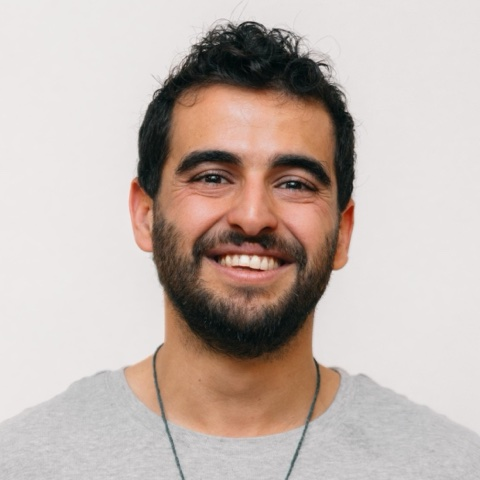

Learned cable dynamics
Data-driven simulators that predict the motion of cables the model has never seen and stay stable over long rollouts, including when the cable contacts itself or the floor.

PhD Candidate, Tel Aviv University
Advised by Prof. Avishai Sintov
I build models and controllers that let robots handle cables and other deformable linear objects. My work covers learned dynamics models that predict how a cable moves, dynamic cable manipulation, and the use of tactile sensing to identify a cable's physical properties during manipulation and to calibrate simulation to the real cable.
Before my PhD I studied Mechanical Engineering at Afeka Tel Aviv Academic College of Engineering. I teach Introduction to Robotics at the Faculty of Engineering, Tel Aviv University.
Data-driven simulators that predict the motion of cables the model has never seen and stay stable over long rollouts, including when the cable contacts itself or the floor.
Fast arm motions that swing or throw a cable to a target, where the robot must account for the cable's dynamics.
Estimating a cable's stiffness and other physical parameters from tactile signals at the gripper, and using them to match simulation to the real cable.
NeurReps Workshop at NeurIPS 2026, Extended Abstract Track
An additive attention bias that tells a graph-transformer cable simulator how far apart two segments are, along the cable or in space. The bias improves prediction on unseen cables. When attention is the only link between distant segments, the arc-length bias cuts prediction error by 15% and more than halves segment-length drift. Putting the two distances on separate attention heads is best or near-best on every metric.